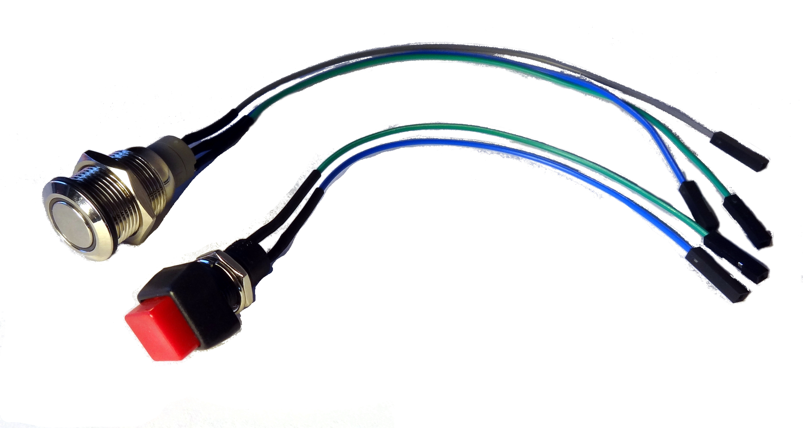
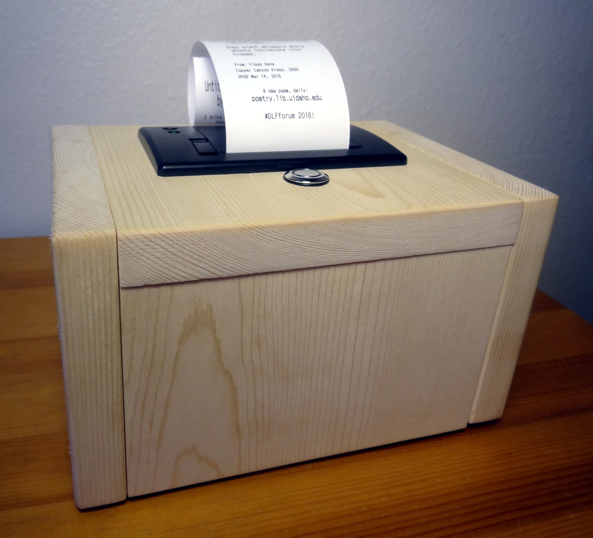
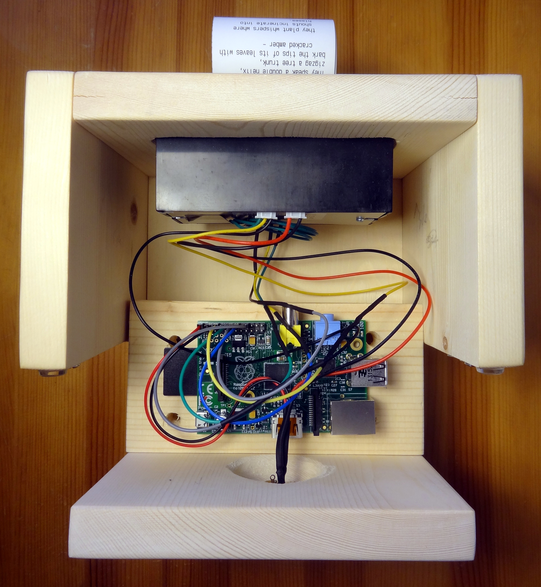

poemBot
printer + pi + python + poems.
Easy to read, carry in your pocket, and share with your friends: poems printed on receipts are fun!
PoemBot is a Raspberry Pi connected to a thermal receipt printer offering physical prints from a daily poetry website at the touch of a button. It was developed to help promote the Vandal Poem of the Day project which seeks to bring relevant contemporary poetry to University of Idaho and the broader Idaho community. In addition to printing poems, poemBot does other fun stuff. It goes to conferences, attends poetry readings, creates contact cards for the library, and prints stuff for special events!
Here is a little video of the earliest prototype: https://twitter.com/VandalPoem/status/704377485593432065
Originally based on Adafruit IoT Printer, poemBot uses a version of the printer library from Adafruit Python-Thermal-Printer.
A full example implementation is available as poemsMain.py using public domain poems.
Case and Wiring
Our physical set up mostly follows Adafruit IoT Printer. However, to simplify construction and reuse, I replaced the t-cobbler with jumpers soldered to the components, inspired by simonmonk's Squid. This makes it easy to assemble, modify, and demo.

I built cases out of 1x6 boards to give the poemBot a solid home.

Here's what it looks like inside:

Example Implementation
This repository contains a complete example implementation using public domain poems, plus all the original VPOD files used for various purposes (which might not include the data and image files due to copyright).
The main loop is poemsMain.py which loads poems to print from goldenTreasuryPoems.csv.
I created the poem CSV following a similar method as with VPOD using OpenRefine to parse the HTML text from Project Gutenberg.
Since there is no markup other than <pre> tags, parsing was mostly achieved using regular expressions.
I selected approximately 100 poems less than 20 lines in length.
The CSV has the columns: number,title,author,poem,book. Number is the number given in the Golden Treasury.
THE GOLDEN TREASURY Of the best Songs and Lyrical Pieces In the English Language Selected by Francis Turner Palgrave 1861 Project Gutenberg EBook #19221
Prepare Poems
The VPOD printer script loads the poems from a CSV with the columns: VPODdate, title, author, poem, book.
VPODdate is the date the poem appeared as Vandal Poem of the Day.
The poem column contains the full text of the poem with no markup, only \n. Line indentation is replaced by spaces.
The book column is the title of the book where the poem appears plus the year of publication.
To create this data I exported all VPOD poems from the Wordpress poetry website in XML, with embedded HTML markup.
I used OpenRefine to parse the XML and transform the data.
I cleaned up the HTML markup, replacing CSS indentation with spaces and adding \n.
Since the thermal printer is small with 32 normal characters per line, larger poems could take several feet of paper to print.
I decided to limit the pool of poems based on number of lines and total characters.
This can be done quickly with OpenRefine by creating new columns based on poem with value.split("\n").length() and length(value), then adding numeric facets.
Export the subset of poems data as CSV from OpenRefine.
Edit the CSV with a text editor (not LibreOffice or Excel) to remove the header and check the character encoding to avoid issues with Python and the printer. The Adafruit thermal printer only supports the CP 437 character set. The current UTF-8 encoding can generate strange outputs on special characters. Convert the encoding to CP437.
Set Up
The Raspberry Pi needs to be set up to run headless. SSH in for set up and testing. After testing the Python main loop and poem printing, set it to load on boot by editing rc.local:
sudo nano /etc/rc.local
Add the terminal command to start the python script before the line "exit 0":
cd /home/pi/poemBot
python poemsMain.py &
References
UBC RAD-device, https://github.com/asistubc/RAD-device
Little Box of Poems, http://www.suppertime.co.uk/blogmywiki/2012/12/pi-poems/
Adafruit IoT Printer, https://learn.adafruit.com/pi-thermal-printer/overview